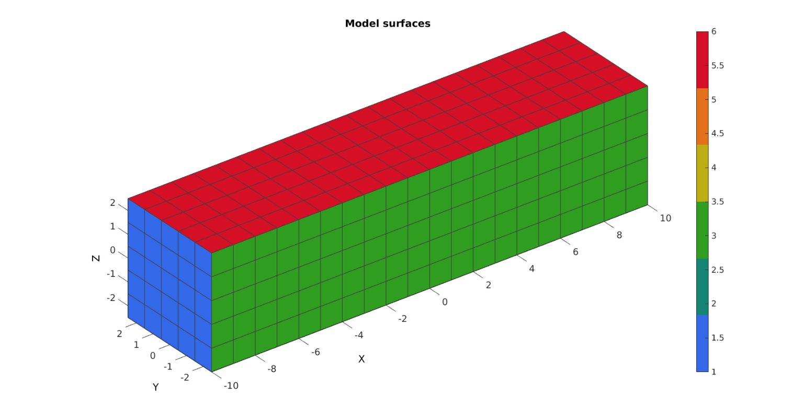
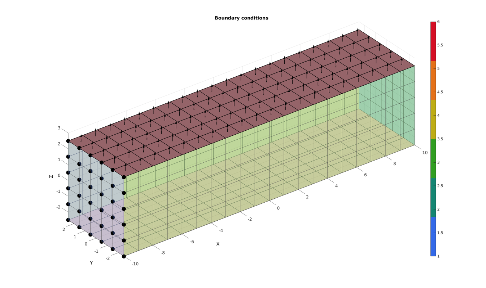
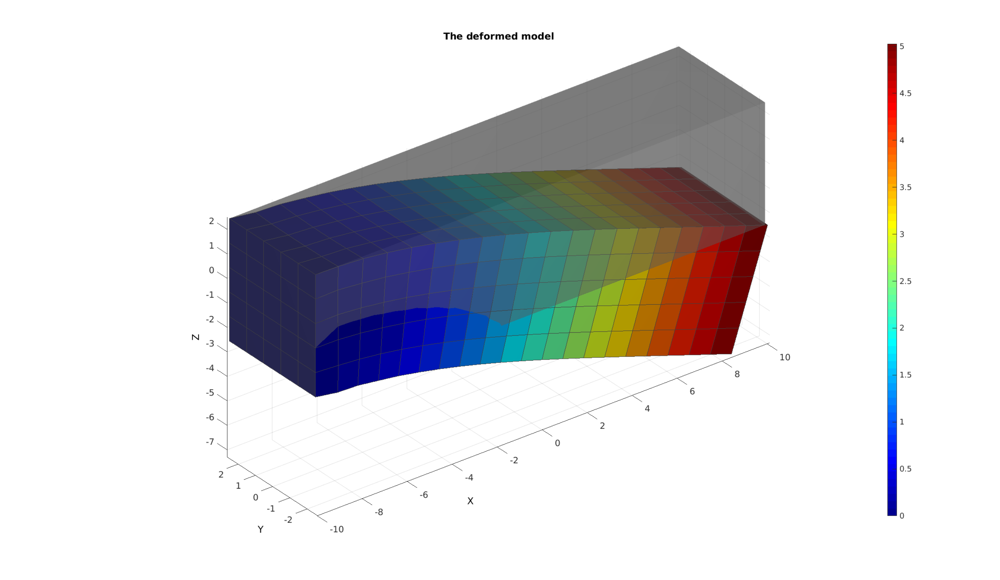

DEMO_FEBio_beam_bending
Below is a demonstration for:
- The creation of an FEBio model whereby a pressure is applied to top surface of a bar, causing it to bend
- Running an FEBio job with MATLAB
- Importing FEBio results into MATLAB
Contents
clear; close all; clc;
Plot settings
fontSize=15; faceAlpha1=1; faceAlpha2=0.5; edgeColor=0.25*ones(1,3); edgeWidth=1; edgeWidth2=1.5; markerSize=50;
Control parameters
% path names defaultFolder = fileparts(fileparts(mfilename('fullpath'))); savePath=fullfile(defaultFolder,'data','temp'); modelName=fullfile(savePath,'tempModel'); %Specifying dimensions and number of elements sampleWidth=20; sampleThickness=5; sampleHeight=5; pointSpacings=1.*[1 1 1]; numElementsWidth=round(sampleWidth/pointSpacings(1)); numElementsThickness=round(sampleThickness/pointSpacings(2)); numElementsHeight=round(sampleHeight/pointSpacings(3)); % FEA control settings numTimeSteps=20; %Number of time steps desired max_refs=25; %Max reforms max_ups=0; %Set to zero to use full-Newton iterations opt_iter=10; %Optimum number of iterations max_retries=5; %Maximum number of retires dtmin=(1/numTimeSteps)/100; %Minimum time step size dtmax=1/numTimeSteps; %Maximum time step size c1=1e-3; k=1e3*c1;
CREATING MESHED BOX
%Create box 1 boxDim=[sampleWidth sampleThickness sampleHeight]; %Dimensions boxEl=[numElementsWidth numElementsThickness numElementsHeight]; %Number of elements [box1]=hexMeshBox(boxDim,boxEl); E=box1.E; V=box1.V; Fb=box1.Fb; faceBoundaryMarker=box1.faceBoundaryMarker; X=V(:,1); Y=V(:,2); Z=V(:,3); VE=[mean(X(E),2) mean(Y(E),2) mean(Z(E),2)]; elementMaterialIndices=ones(size(E,1),1);
% Plotting boundary surfaces hf=cFigure; title('Model surfaces','FontSize',fontSize); xlabel('X','FontSize',fontSize); ylabel('Y','FontSize',fontSize); zlabel('Z','FontSize',fontSize); hold on; patch('Faces',Fb,'Vertices',V,'FaceColor','flat','CData',faceBoundaryMarker,'FaceAlpha',faceAlpha1,'lineWidth',edgeWidth,'edgeColor',edgeColor); colormap(gjet(6)); colorbar; set(gca,'FontSize',fontSize); view(3); axis tight; axis equal; grid on; % camlight headlight; drawnow;
DEFINE BC's
%Supported nodes logicRigid=faceBoundaryMarker==1; Fr=Fb(logicRigid,:); bcRigidList=unique(Fr(:)); %Top surface logicPressure=faceBoundaryMarker==6; F_top=Fb(logicPressure,:);
Visualize BC's
hf=cFigure; title('Boundary conditions','FontSize',fontSize); xlabel('X','FontSize',fontSize); ylabel('Y','FontSize',fontSize); zlabel('Z','FontSize',fontSize); hold on; patch('Faces',Fb,'Vertices',V,'FaceColor','flat','CData',faceBoundaryMarker,'FaceAlpha',0.25,'lineWidth',edgeWidth,'edgeColor',edgeColor); plotV(V(bcRigidList,:),'k.','MarkerSize',markerSize); patch('Faces',F_top,'Vertices',V,'FaceColor',0.5*ones(1,3),'FaceAlpha',faceAlpha1,'lineWidth',edgeWidth2,'edgeColor','k'); [hp]=patchNormPlot(F_top,V); set(gca,'FontSize',fontSize); colormap(gjet(6)); colorbar; view(3); axis tight; axis equal; grid on; drawnow;
CONSTRUCTING FEB MODEL
FEB_struct.febio_spec.version='2.0'; FEB_struct.Module.Type='solid'; % Defining file names FEB_struct.run_filename=[modelName,'.feb']; %FEB file name FEB_struct.run_logname=[modelName,'.txt']; %FEBio log file name %Geometry section FEB_struct.Geometry.Nodes=V; FEB_struct.Geometry.Elements={E}; %The element sets FEB_struct.Geometry.ElementType={'hex8'}; %The element types FEB_struct.Geometry.ElementMat={elementMaterialIndices}; FEB_struct.Geometry.ElementsPartName={'Bar'}; %Material section FEB_struct.Materials{1}.Type='Mooney-Rivlin'; FEB_struct.Materials{1}.Properties={'c1','c2','k'}; FEB_struct.Materials{1}.Values={c1,0,k}; %Control section FEB_struct.Control.AnalysisType='static'; FEB_struct.Control.Properties={'time_steps','step_size',... 'max_refs','max_ups',... 'dtol','etol','rtol','lstol'}; FEB_struct.Control.Values={numTimeSteps,1/numTimeSteps,... max_refs,max_ups,... 0.001,0.01,0,0.9}; FEB_struct.Control.TimeStepperProperties={'dtmin','dtmax','max_retries','opt_iter'}; FEB_struct.Control.TimeStepperValues={dtmin,dtmax,max_retries,opt_iter}; %Defining node sets FEB_struct.Geometry.NodeSet{1}.Set=bcRigidList; FEB_struct.Geometry.NodeSet{1}.Name='bcRigidList'; %Define surface sets FEB_struct.Geometry.Surface{1}.Set=F_top; FEB_struct.Geometry.Surface{1}.Type='tri3'; FEB_struct.Geometry.Surface{1}.Name='Pressure_surface'; %Adding BC information FEB_struct.Boundary.Fix{1}.bc='x'; FEB_struct.Boundary.Fix{1}.SetName=FEB_struct.Geometry.NodeSet{1}.Name; FEB_struct.Boundary.Fix{2}.bc='y'; FEB_struct.Boundary.Fix{2}.SetName=FEB_struct.Geometry.NodeSet{1}.Name; FEB_struct.Boundary.Fix{3}.bc='z'; FEB_struct.Boundary.Fix{3}.SetName=FEB_struct.Geometry.NodeSet{1}.Name; %Adding load information FEB_struct.Loads.Surface_load{1}.Type='pressure'; FEB_struct.Loads.Surface_load{1}.SetName=FEB_struct.Geometry.Surface{1}.Name; FEB_struct.Loads.Surface_load{1}.lcPar='pressure'; FEB_struct.Loads.Surface_load{1}.lcParValue=3e-5; %Pressure level FEB_struct.Loads.Surface_load{1}.lc=1; %Load curves FEB_struct.LoadData.LoadCurves.id=1; FEB_struct.LoadData.LoadCurves.type={'linear'}; FEB_struct.LoadData.LoadCurves.loadPoints={[0 0;1 1;]}; %Adding output requests FEB_struct.Output.VarTypes={'displacement','stress','relative volume','shell thickness'}; %Specify log file output run_node_output_name=[FEB_struct.run_filename(1:end-4),'_node_out.txt']; FEB_struct.run_output_names={run_node_output_name}; FEB_struct.output_types={'node_data'}; FEB_struct.data_types={'ux;uy;uz'};
SAVING .FEB FILE
FEB_struct.disp_opt=0; %Display waitbars
febStruct2febFile(FEB_struct);
Warning: febStruct2febFile is depricated and will be removed in future releases. Update your codes to use febioStruct2xml, see HELP_febioStruct2xml (furthermore febio_spec version 2.5 is recommended) %%%%%%%%%%%%%%%%%%%%%%%%%%%%%%%%%%%%%%%%%%%%% --- Writing FEBio XML object --- 14-Feb-2018 14:37:08 Using febio_spec: 2.0 Adding Module level Adding Control level Adding Material level Adding Geometry level ----> Adding node field ----> Adding element field ----> Adding hex8 element entries.... ----> Adding surface field ----> Adding NodeSet field Adding Boundary level ----> Defining fix type boundary conditions Adding Loads level ----> Defining surface loads Adding LoadData level ----> Defining load curves Adding Output level ----> Adding plotfile field ----> Adding logfile field Warning: Provided path of logfile is replaced by .feb file path. Only provide filename to avoid this warning Writing .feb file --- Done --- 14-Feb-2018 14:37:08
RUNNING FEBIO JOB
FEBioRunStruct.run_filename=FEB_struct.run_filename; FEBioRunStruct.run_logname=FEB_struct.run_logname; FEBioRunStruct.disp_on=1; FEBioRunStruct.disp_log_on=1; FEBioRunStruct.runMode='external';%'internal'; FEBioRunStruct.t_check=0.25; %Time for checking log file (dont set too small) FEBioRunStruct.maxtpi=1e99; %Max analysis time FEBioRunStruct.maxLogCheckTime=3; %Max log file checking time [runFlag]=runMonitorFEBio(FEBioRunStruct);%START FEBio NOW!!!!!!!!
%%%%%%%%%%%%%%%%%%%%%%%%%%%%%%%%%%%%%%%%%%%%% --- STARTING FEBIO JOB --- 14-Feb-2018 14:37:08 Waiting for log file... Proceeding to check log file...14-Feb-2018 14:37:08 ------- converged at time : 0.05 ------- converged at time : 0.1 ------- converged at time : 0.15 ------- converged at time : 0.2 ------- converged at time : 0.25 ------- converged at time : 0.3 ------- converged at time : 0.35 ------- converged at time : 0.4 ------- converged at time : 0.45 ------- converged at time : 0.5 ------- converged at time : 0.55 ------- converged at time : 0.6 ------- converged at time : 0.65 ------- converged at time : 0.7 ------- converged at time : 0.75 ------- converged at time : 0.8 ------- converged at time : 0.85 ------- converged at time : 0.9 ------- converged at time : 0.95 ------- converged at time : 1 --- Done --- 14-Feb-2018 14:37:10
if runFlag==1 %i.e. a succesful run
IMPORTING NODAL DISPLACEMENT RESULTS
Importing nodal displacements from a log file
[~, N_disp_mat,~]=importFEBio_logfile(FEB_struct.run_output_names{1}); %Nodal displacements
DN=N_disp_mat(:,2:end,end); %Final nodal displacements
CREATING NODE SET IN DEFORMED STATE
V_def=V+DN;
DN_magnitude=sqrt(sum(DN.^2,2));
Plotting the deformed model
[CF]=vertexToFaceMeasure(Fb,DN_magnitude);
hf1=cFigure;
title('The deformed model','FontSize',fontSize);
xlabel('X','FontSize',fontSize); ylabel('Y','FontSize',fontSize); zlabel('Z','FontSize',fontSize); hold on;
hps=patch('Faces',Fb,'Vertices',V,'FaceColor',0.5*ones(1,3),'faceAlpha',faceAlpha2,'edgeColor','none');
hps=patch('Faces',Fb,'Vertices',V_def,'FaceColor','flat','CData',CF,'lineWidth',edgeWidth,'edgeColor',edgeColor);
view(3); axis tight; axis equal; grid on;
colormap jet; colorbar;
camlight headlight;
set(gca,'FontSize',fontSize);
drawnow;
 end

GIBBON www.gibboncode.org
Kevin Mattheus Moerman, gibbon.toolbox@gmail.com
GIBBON footer text
License: https://github.com/gibbonCode/GIBBON/blob/master/LICENSE
GIBBON: The Geometry and Image-based Bioengineering add-On. A toolbox for image segmentation, image-based modeling, meshing, and finite element analysis.
Copyright (C) 2017 Kevin Mattheus Moerman
This program is free software: you can redistribute it and/or modify it under the terms of the GNU General Public License as published by the Free Software Foundation, either version 3 of the License, or (at your option) any later version.
This program is distributed in the hope that it will be useful, but WITHOUT ANY WARRANTY; without even the implied warranty of MERCHANTABILITY or FITNESS FOR A PARTICULAR PURPOSE. See the GNU General Public License for more details.
You should have received a copy of the GNU General Public License along with this program. If not, see http://www.gnu.org/licenses/.